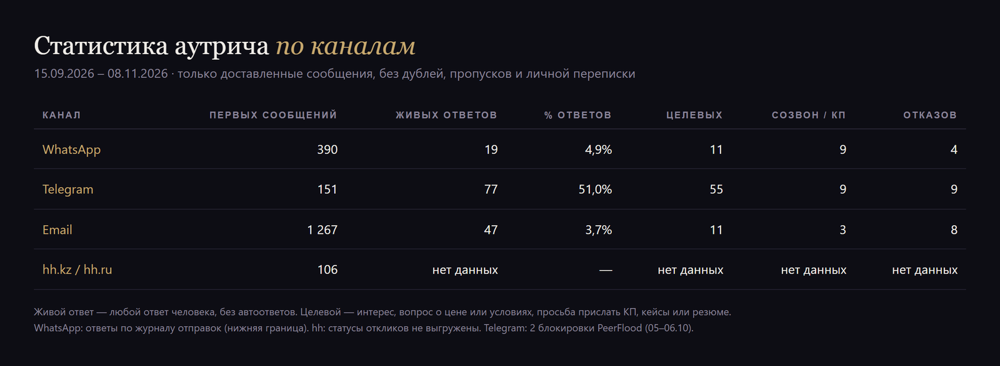
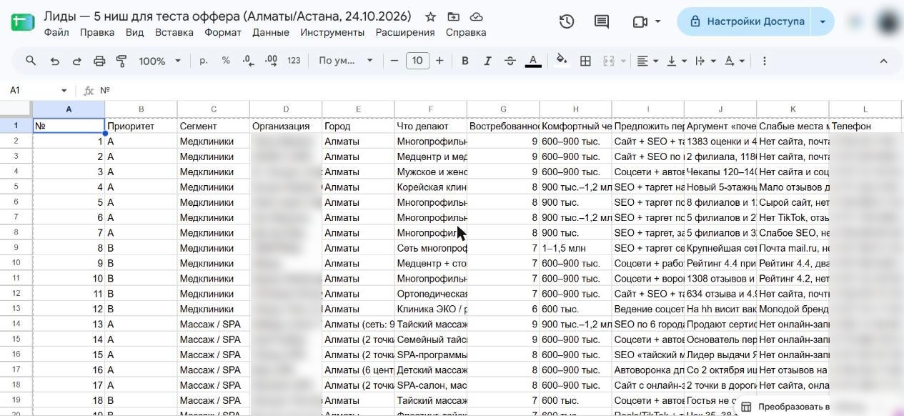
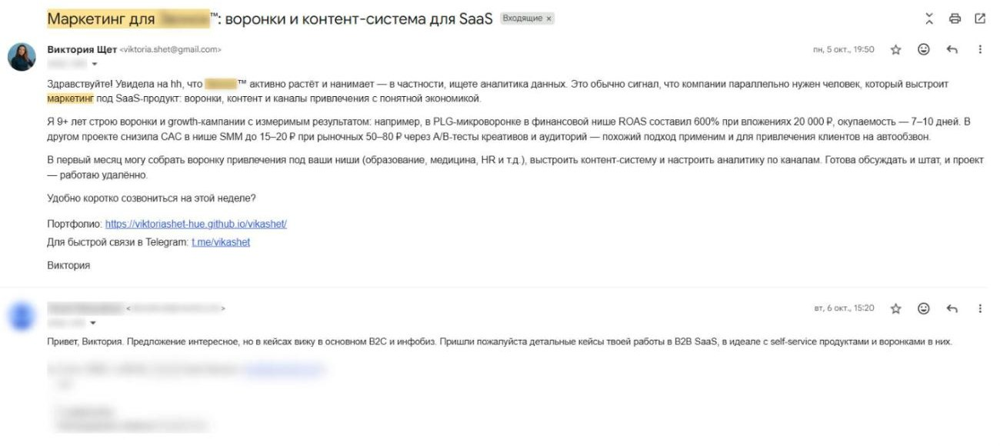

Что такое GTM-маркетинг и при чём тут сигналы покупки
GTM — от go-to-market, «выход на рынок». Так называют всё, что компания делает, чтобы дойти до своих покупателей. В американском и европейском B2B за последние два года сложилась отдельная профессия — GTM-инженер, и отдельный подход: signal-based selling, продажи по сигналам покупки.
Суть простая. Сначала ищут не всех подряд, а компании, у которых прямо сейчас появился повод купить: открыли филиал, наняли руководителя, ищут маркетолога, вышли на новый рынок, объявили закупку. Потом каждой пишут сообщение про её ситуацию. А менеджер по продажам получает не список для обзвона, а людей, которые уже ответили.
Сигнал покупки — это событие, которое видно со стороны и говорит, что у компании сейчас есть задача, которую решает ваш продукт. Не «подходит по отрасли», а «нужно именно сейчас».
Почему холодный обзвон перестал окупаться
Классическая математика холодных продаж держится на объёме. В Clay, главном сервисе для таких продаж, её разбирают на примере: отправить 10 000 писем при 1% ответов — получить 100 разговоров. Проблема в том, что на большом объёме сообщения становятся одинаковыми, процент ответов падает быстрее, чем растёт охват, а отвечают в основном те, кто вам вообще не подходит.
Я сама руковожу маркетингом больше 9 лет и вижу то же самое в Казахстане: менеджеры обзванивают списки, выгорают, а тёплых клиентов среди дозвонов единицы. Поэтому я и ушла в GTM: глубокий анализ вместо объёма звонков.
7 кейсов из США и Европы
Все цифры ниже — из опубликованных кейсов компаний и сервисов, на которых построены их системы. Ссылки на источники под каждым кейсом.
1. Coverflex: 200+ демо в месяц из базы в 3 миллиона компаний
Coverflex продаёт платформу льгот для сотрудников малому и среднему бизнесу Португалии, Испании и Италии. Раньше команда собирала данные и сигналы в разных сервисах, данных не хватало, и выручка не росла так, как было нужно.
Их руководитель роста собрал систему, которая сама отслеживает сигналы покупки у 3+ миллионов компаний, ставит приоритет и под каждую готовит персональные письма, рекламу и даже отдельные посадочные страницы. Сам он называет её «наш внутренний ZoomInfo».
Источник: Clay, кейс Coverflex
2. LeanIX: один сигнал «бывший клиент сменил работу» — $2,4 млн закрытых сделок
LeanIX отслеживал людей, которые уже знали продукт: бывших клиентов, тех, с кем сделка сорвалась, и внутренних сторонников. Как только такой человек переходил в новую компанию, менеджер сразу получал повод написать: «вы с нами уже работали, на новом месте задача, скорее всего, та же».
До этого всё делали руками: выгружали компании в таблицы и искали людей в LinkedIn. Сами в LeanIX называли это невыполнимым на их объёме. После автоматизации цепочка касаний шла 3–4 недели: 6–7 писем, 10–11 звонков и одно сообщение в LinkedIn.
Источник: UserGems, кейс LeanIX
3. Key Training: пишут тем, кто последние 3 месяца на новой руководящей должности
Раньше эта лондонская компания брала клиентов массовым маркетингом, холодными звонками и LinkedIn. Сейчас отдел продаж корпоративного обучения работает по сигналу смены должности: человек, который за последние три месяца перешёл на руководящую позицию, чаще готов принять решение о покупке. Он хочет показать результат на новом месте.
Источник: Cognism, кейс Key Training
4. Pump: два сигнала и ответов на 25% больше
Pump помогает компаниям экономить на облачных серверах. Им важно знать про компанию две вещи: каким облаком она пользуется и растут ли у неё команды инженеров и финансистов. Растёт команда — растут расходы на облако, и разговор об экономии попадает в точку.
Под каждое облако и каждую ситуацию роста написали отдельный текст. Только персонализация под облачного провайдера подняла ответы на 25%.
Источник: Clay, кейс Pump
5. SeekOut: рекрутеры меняют работу — и приводят продукт с собой
SeekOut продаёт сервис для рекрутеров. Их сигнал — переход знакомого им рекрутера в новую компанию: человек уже знает продукт и на новом месте ему нужен тот же инструмент. Письма уходили автоматически, как только сигнал срабатывал.
Источник: UserGems, кейс SeekOut
6. Qrew: половина отдела продаж — и вдвое больше ответов
Раньше продавцы Qrew часами искали компании, проверяли их и изучали перед письмом, а письма всё равно уходили общими. Поиск и разбор отдали автоматизации, а людям оставили разговоры.
Источник: Clay, кейс Qrew
7. Verkada: сигнал «напишите нам в мае»
Самый простой сигнал, который почти все теряют. Когда клиент отвечает «сейчас не время, вернитесь в мае», это не отказ: он сам назвал срок и сам разрешил написать. Verkada собирает такие ответы, ставит дату и в нужный день отправляет письмо «Возвращаюсь, как вы и просили», а внизу цитирует ответ клиента.
Источник: Clay, кейс Verkada
Почему это работает: три причины
Если убрать названия сервисов, во всех семи кейсах работает одна и та же механика. В американском сервисе Unify её раскладывают на три вещи, и я с ними полностью согласна:
- Время. Вы приходите, когда задача у компании появилась, а не когда у вас по плану обзвон. Новый директор, новый филиал, вакансия — это окно, которое закрывается через несколько недель.
- Попадание. В сообщении есть повод: «увидела, что вы открыли вторую точку». Человек сразу понимает, почему пишут именно ему. Шаблон «мы предлагаем услуги» так не работает.
- Меньше впустую. Пишете меньшему числу компаний, но тем, у кого есть признаки. Менеджеры не тратят дни на тех, кому ничего не нужно, и не выгорают на отказах.
Добавлю от себя четвёртую: кто пришёл первым, у того и покупают. В B2B решение часто принимают ещё до того, как компания объявит тендер или начнёт сравнивать подрядчиков. Сигнал даёт фору в несколько недель.
| Холодный обзвон | Продажи по сигналам | |
|---|---|---|
| Кому | всем по списку | тем, у кого есть повод купить сейчас |
| Что говорят | один сценарий для всех | сообщение про ситуацию конкретной компании |
| Первый контакт | звонок в лоб | сообщение в WhatsApp или письмо, без давления |
| С кем говорит менеджер | с теми, кто взял трубку | с теми, кто ответил и ждёт расчёт |
А в Казахстане это работает? Мой тест
Западные сервисы вроде Clay и UserGems здесь почти не используют: они дорогие и не знают местных данных — 2ГИС, БИН, вакансий на hh.kz, казахстанских закупок. Поэтому я собрала свою систему на ИИ-агентах под местный рынок и проверила её на себе осенью 2026 года.
За 4 недели система отправила больше 800 персональных касаний в email, Telegram и на hh.kz: около 400 компаний в пяти странах, у каждой разобраны слабые места и повод «почему сейчас». Рекламный бюджет — 0 ₸. Главный вывод совпал с американскими кейсами один в один.

Итоги теста: сколько писем ушло и сколько ответили по каждому направлению

CRM: база компаний с приоритетом, разбором слабых мест и поводом «почему сейчас». Названия и контакты скрыты

Письмо с конкретным поводом и ответ компании: «Предложение интересное»
Вакансия SMM-специалиста на hh.kz, например, оказалась отличным сигналом «компании прямо сейчас нужен маркетинг»: таких компаний в базе набралось 68. Полный разбор с цифрами по каждому направлению — в кейсе ИИ-лидогенерации.
Какие сигналы я ищу для бизнеса в Казахстане
Набор сигналов зависит от ниши. Вот что работает на местных данных:
- Новая точка или филиал — новые карточки в 2ГИС за последние месяцы, анонсы в Instagram*. Нужны вывески, меню, упаковка, мебель, кадры, CRM, реклама.
- Вакансия на hh.kz — компания растёт или вкладывается в направление: ищет маркетолога, продажника, юриста, бухгалтера.
- Новое юрлицо или смена руководителя — открытые реестры. Новый директор приходит со своими задачами и меняет подрядчиков.
- Закупка — госзакупки и закупки крупных компаний. Прямая потребность с бюджетом.
- Выставка — списки участников: нужны каталоги, стенды, раздаточные материалы, встречи.
- Жалобы на конкурента в отзывах — компания, недовольная текущим подрядчиком, открыта к альтернативе.
- Сезон — корпоративные подарки, календари, обучение сотрудников перед новым годом, Наурызом и 8 Марта.
Как я настраиваю GTM-систему под ваш бизнес
- Разбираю ваших лучших клиентов. Кто они, что покупают, какой чек, почему выбрали вас. Это портрет того, кого искать.
- Определяю сигналы под вашу нишу. Какие события говорят, что ваш продукт нужен сейчас, и где их видно.
- Собираю базу. Компании с сигналами, кто принимает решение, публичные контакты, источник и дата сигнала. Приоритет: у кого сигналов больше, тем пишем первыми.
- Пишу каждой компании своё сообщение. Повод, боль, конкретная выгода, один простой шаг. Два сообщения не совпадают больше чем на 30%.
- Выхожу на контакт. WhatsApp, письмо, 1–2 напоминания с новой пользой. Задача не продать в переписке, а договориться о разговоре.
- Передаю тёплого клиента вашему менеджеру. С карточкой: кто это, какой был повод, что уже обсудили. Менеджер сразу готовит расчёт и КП.
- Отчёт каждую неделю. Найдено сигналов → написали → ответили → передали менеджеру → встречи → сделки.
Кому подходит: B2B-компаниям, у которых один клиент приносит заметные деньги, — типографиям и производствам, клиникам, застройщикам, поставщикам для HoReCa, IT и сервисным компаниям, кадровым и рекрутинговым агентствам. Вашим менеджерам больше не нужно обзванивать списки: они разговаривают с теми, кто уже ответил.
Получите предложение под вашу нишу
Напишите, что вы продаёте и кому. Я подберу 3–5 сигналов покупки для вашей ниши, покажу, где их искать в Казахстане, и пришлю предложение по запуску GTM-системы. Ни к чему не обязывает.
Как устроена услуга, пакеты и стоимость — в коммерческом предложении.
Частые вопросы
Что такое GTM-маркетинг простыми словами?
GTM (go-to-market) — это то, как компания выходит к своим покупателям. В B2B сейчас под этим чаще всего понимают продажи по сигналам покупки: сначала находят компании, у которых прямо сейчас появилась потребность, а потом пишут каждой сообщение под её ситуацию и передают ответивших менеджеру.
Чем продажи по сигналам отличаются от холодного обзвона?
Холодный обзвон идёт по списку всем подряд с одним сценарием. Продажи по сигналам начинаются с повода: новый филиал, вакансия, смена руководителя, закупка. Пишут меньшему числу компаний, но в тот момент, когда им это нужно, и про их ситуацию. Поэтому отвечают в разы чаще.
Какие сигналы покупки работают в Казахстане?
Новые точки и филиалы в 2ГИС, вакансии на hh.kz, новые юрлица и смена руководителя в открытых реестрах, госзакупки и закупки крупных компаний, участие в выставках, жалобы на конкурентов в отзывах. Под каждую нишу набор сигналов свой.
Сколько времени нужно до первых тёплых клиентов?
Первая неделя уходит на разбор ваших лучших клиентов и сигналов, вторая — на базу и сообщения. Первые ответы обычно приходят в первые дни после старта отправки.
Нужен ли для этого отдел продаж?
Нужен человек, который примет тёплого клиента и подготовит расчёт или КП. Поиск компаний, сообщения и первый контакт я беру на себя.
Источники
- Clay: Coverflex — сигналы по 3M+ компаний, 200+ демо в месяц
- UserGems: LeanIX — $10M воронки, $2,4M сделок, окупаемость за 6 недель
- Cognism: Key Training — сигнал смены должности
- Clay: Pump — +25% ответов, +30% встреч
- UserGems: SeekOut — $1,5M воронки, 15–25% ответов
- Clay: Qrew — половина отдела продаж, вдвое больше ответов
- Clay: Verkada — 33% ответов на повторное касание
- Clay: почему массовый холодный аутрич перестал окупаться
- Unify: три механизма, через которые сигналы увеличивают воронку
* Instagram принадлежит компании Meta, которая признана экстремистской организацией и запрещена в России.